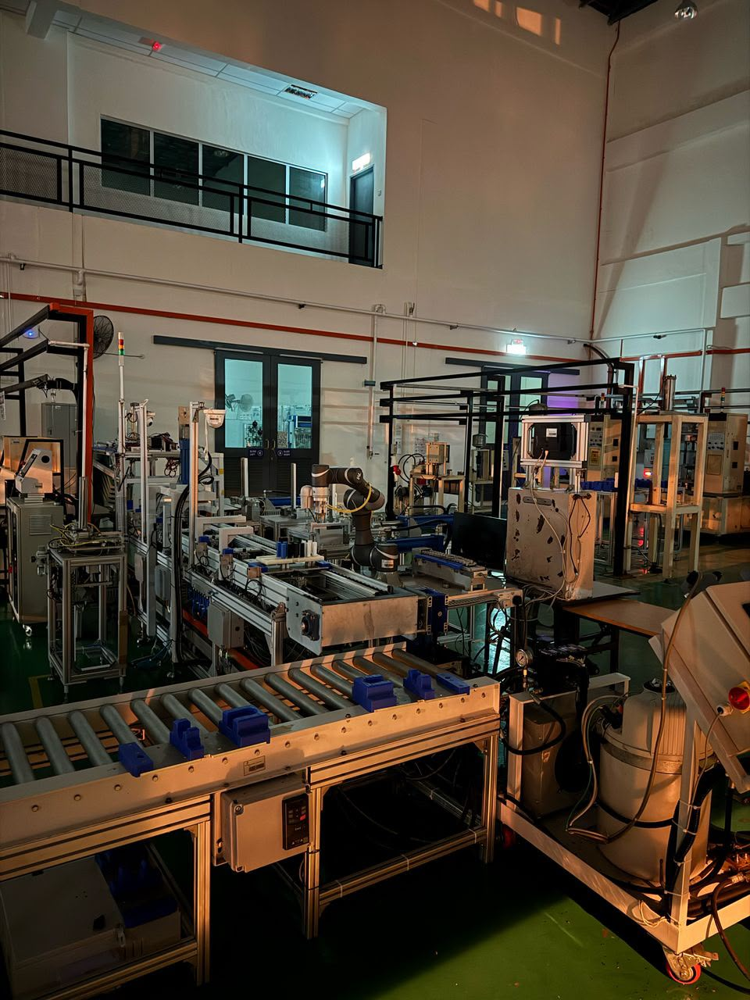
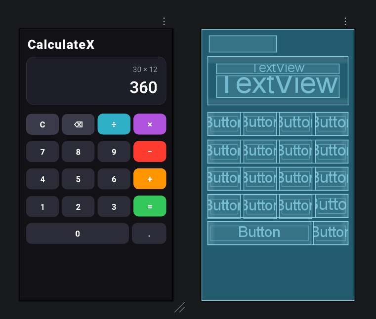
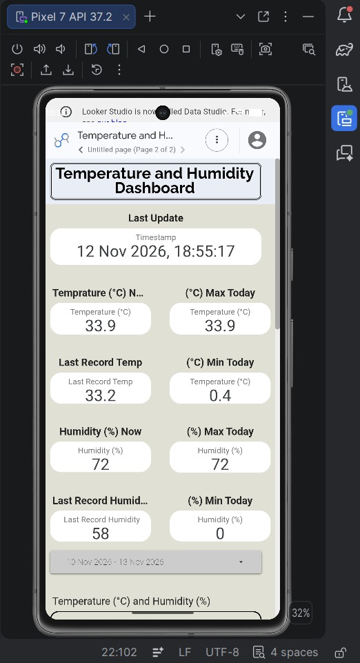

⚙️
Hot and Water Mini Plant
System integration design for a PLC and HMI controlled mini plant.
AutomationAcademic and personal projects. Click a project to see the details.
System integration design for a PLC and HMI controlled mini plant.
AutomationSensor-based monitoring for an egg incubator at KV Pertanian Chenor.
IoT
Teaching Factory production line project at UMPSA.
Automation
a calculator that follow the client requirements simple and easy to use
Web
An ESP32 and DHT11 system that sends live sensor readings to Google Sheets and a Looker Studio dashboard.
IoTThis website, hand-coded from scratch and published on GitHub Pages.
Web